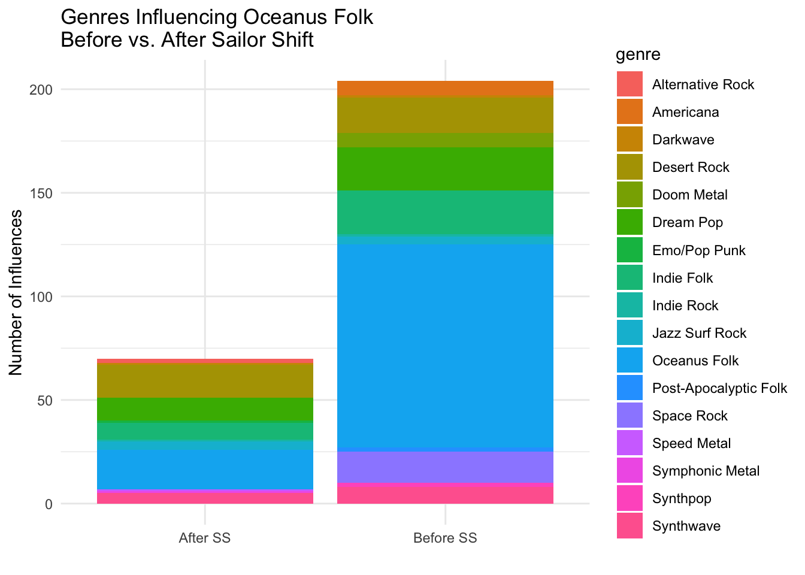

pacman::p_load(tidyverse, jsonlite, SmartEDA, tidygraph, ggraph, plotly, treemapify, visNetwork, RColorBrewer)Take-home_Ex02
1. Introduction
This assignment will answer the question 2 of Mini-Challenge 1 in VAST Challenge 2025:
Develop visualizations that illustrate how the influence of Oceanus Folk has spread through the musical world.
Was this influence intermittent or did it have a gradual rise?
What genres and top artists have been most influenced by Oceanus Folk?
On the converse, how has Oceanus Folk changed with the rise of Sailor Shift? From which genres does it draw most of its contemporary inspiration?
To do the data visualization, we need to prepare the data first.
2. Data Preparation and Wrangling
2.1 Loading Packages
The following packages are the needed packages:
- tidyverse: A collection of R packages designed for data science, offering tools for data manipulation, visualization, and analysis using a consistent syntax.
- jsonlite: Provides a robust and easy-to-use framework for parsing and generating JSON data in R.
- SmartEDA: Automates exploratory data analysis (EDA) by generating summary statistics, visualizations, and variable profiling with minimal code.
- tidygraph: Brings tidyverse principles to graph data, enabling tidy manipulation of nodes and edges in network analysis.
- ggraph: An extension of ggplot2 for visualizing graph and network structures in a customizable and aesthetically pleasing way.
- plotly: Enables interactive, web-based visualizations using ggplot2 or direct plotly syntax, enhancing data exploration.
- treemapify: Creates treemaps using the ggplot2 framework, allowing hierarchical data to be visualized with area-proportional rectangles.
- visNetwork: Facilitates interactive network visualization using the vis.js JavaScript library, enabling dynamic manipulation and exploration of network graphs.
- RColorBrewer: An R package that provides a selection of color palettes specially designed for creating clear, visually appealing maps and graphics, particularly for categorical and sequential data.
2.2 Importing Data
For the purpose of this exercise, MC1_graph.json file will be used. Before getting started, we should have the data set in the data sub-folder.
In the code chunk below, fromJSON() of jsonlite package is used to import MC1_graph.json file into R and save the output object
kg <- fromJSON("MC1_release/MC1_graph.json")2.3 Extracting the edges and nodes tables
Next, as_tibble() of tibble package is used to extract the nodes and links tibble data frames from kg object into two separate tibble data frames called nodes_tbl and edges_tbl respectively.
nodes_tbl <- as_tibble(kg$nodes)
edges_tbl <- as_tibble(kg$links) 2.4 Initial EDA
To examine the data, the following code chunks are used to reveal the frequency distribution of Edge Type field of edges_tbl and the frequency distribution of Node Type field of nodes_tbl
ggplot(data = edges_tbl,
aes(y=`Edge Type`))+
geom_bar()
ggplot(data = nodes_tbl,
aes(y=`Node Type`))+
geom_bar()
2.5 Creating Knowledge Graph
2.5.1 Mapping from node id to row index
It is important for us to ensure each id from the node list is mapped to the correct row number, so that we can build the tidygraph.
id_map <- tibble (id = nodes_tbl$id,
index = seq_len(
nrow(nodes_tbl)))2.5.2 Tidy the Edges Table
Next, we will map the source and the target IDs to row indices by using the code chunk below.
edges_tbl <- edges_tbl %>%
left_join(id_map, by = c("source" = "id")) %>%
rename (from = index) %>%
left_join(id_map, by = c("target"="id")) %>%
rename(to = index)2.5.3 Filter out any unmatched (invalid) edges
Then, the code chunk below will be used to exclude the unmatch edges.
edges_tbl <- edges_tbl %>%
filter(!is.na(from),!is.na(to))2.5.4 Creating tidygraph
Lastly, tbl_graph() is used to create tidygraph’s graph object by using the code chunk below.
graph <- tbl_graph(nodes = nodes_tbl,
edges = edges_tbl,
directed = kg$directed)To confirm the output object is indeed in tidygraph format.
class(graph)[1] "tbl_graph" "igraph" 2.7 Subset Relevant Songs (Oceanus Folk & Sailor Shift)
In this assignment, since we need to analyze the relationship between Oceanus Folk and Salior Shift, we prepared the data subset here.
Oceanus Folk songs:
of_songs <- nodes_tbl %>%
filter(`Node Type` == "Song", genre == "Oceanus Folk")Sailor Shift songs:
# Get Sailor Shift's person id
sailor_shift_id <- nodes_tbl %>%
filter(`Node Type` == "Person", name == "Sailor Shift") %>%
pull(id)
# Get All Songs Performed by Sailor Shift
ss_song_ids <- edges_tbl %>%
filter(`Edge Type` == "PerformerOf", source == sailor_shift_id) %>%
pull(target)
# Get Song Details
sailor_shift_songs <- nodes_tbl %>%
filter(id %in% ss_song_ids, `Node Type` == "Song")2.8 Define “influence” operationally
To illustrate how the influence of Oceanus Folk has spread through the musical world, we need to define “influence” first.
A song is influenced by Oceanus Folk if:
The source is an Oceanus Folk song
The edge type is one of the below
The target is any other node (usually a song or album)
Based on these points, we can get the influence-type edges by the following code chunk:
influence_types <- c("InStyleOf", "CoverOf", "LyricalReferenceTo", "InterpolatesFrom", "DirectlySamples")
influence_edges <- edges_tbl %>%
filter(`Edge Type` %in% influence_types)2.9 Analytical Dimensions and Visualizations
To dive into this topic, we need to understand what dimensions we will visualize, the following table is the clarification of analytical dimensions.
| Dimension | Purpose |
|---|---|
| Time | When influence happened |
| Genre | What types are influenced |
| Artist | Who are influenced |
| Network Research | How influence spread structurally |
| Diversity | How many genres/regions/styles reached |
3. Data Visualization
Since in the last step, we have already determined several dimensions for analysis, we can visualize these dimensions in detail one by one.
a. Was this influence intermittent or did it have a gradual rise?
For the below code chunk, the line chart is used as the visualization, to see the influence trend based on the year. From the result, we can see the influence trend is not always rising.
The visualization shows that Oceanus Folk had minimal influence before the year 2000, with only sporadic instances of influenced songs. However, starting in the mid-2000s, there is a noticeable increase in influence, peaking dramatically around 2010 with more than 80 influenced songs in a single year. A second but smaller spike appears around 2017. Following that, the influence seems to decline gradually, with some fluctuations, suggesting that the genre’s impact, while still present, has become more subdued in last years.
influence_over_time <- influence_edges %>%
filter(source %in% of_songs$id) %>%
left_join(nodes_tbl, by = c("target" = "id")) %>%
filter(!is.na(release_date)) %>%
count(release_date)
# Ensure column names are friendly
influence_over_time <- influence_edges %>%
filter(source %in% of_songs$id) %>%
left_join(nodes_tbl, by = c("target" = "id")) %>%
filter(!is.na(release_date)) %>%
count(release_date) %>%
mutate(release_year = as.integer(release_date))
# Create interactive plot
plot_ly(influence_over_time,
x = ~release_year,
y = ~n,
type = 'scatter',
mode = 'lines+markers',
line = list(color = 'steelblue'),
marker = list(size = 6, color = 'black'),
text = ~paste("Year:", release_year, "<br>Influenced Songs:", n),
hoverinfo = 'text') %>%
layout(title = "Spread of Oceanus Folk Influence Over Time",
xaxis = list(title = "Release Year of Influenced Work"),
yaxis = list(title = "Number of Influenced Songs"),
hoverlabel = list(bgcolor = "white"))To gain deeper insights into the spread of Oceanus Folk influence, the second chart employs a heatmap that captures the number of influenced songs by genre and release year. Each tile represents a specific genre-year combination, with darker shades indicating a higher count of influenced works. For instance, the most prominent peak occurs in 2010, where Indie Folk saw a significant surge with over 65 songs influenced by Oceanus Folk.
The chart also reveals that the genre’s influence is intermittent rather than continuous, as evidenced by the scattered and missing tiles across many rows and years. This suggests that Oceanus Folk’s impact varied over time and across genres, affecting some genres intensely in certain years while leaving others untouched.
# Prepare heatmap data
influence_heatmap <- influence_edges %>%
filter(source %in% of_songs$id) %>%
left_join(nodes_tbl, by = c("target" = "id")) %>%
filter(!is.na(release_date), !is.na(genre)) %>%
count(release_date, genre) %>%
mutate(release_year = as.character(release_date)) # Treat as categorical for equal-width tiles
# Plot
plot_ly(influence_heatmap,
x = ~release_year,
y = ~genre,
z = ~n,
type = "heatmap",
colorscale = list(
c(0, "#FFC0CB"),
c(1, "#8B0000")
),
text = ~paste("Year:", release_year,
"<br>Genre:", genre,
"<br>Count:", n),
hoverinfo = "text") %>%
layout(title = "Oceanus Folk Influence by Year and Genre",
xaxis = list(title = "Release Year", type = "category"),
yaxis = list(title = "Genre", type = "category"),
margin = list(l = 100))b. What genres and top artists have been most influenced by Oceanus Folk?
Following the line chart and heatmap analyses, which illustrated when Oceanus Folk exerted influence and which genres were affected in specific years. In this section, there are two parts, to understand what genres and top artists have been most influenced by Oceanus Folk.
1. Most influenced genres by Oceanus Folk
The following treemap visualization offers a summarized view of the cumulative genre impact to see what genree have been most influenced by Oceanus Folk. Each rectangle represents a genre, and its area is proportional to the total number of songs influenced by Oceanus Folk within that genre.
The two largest segments, Oceanus Folk (117 songs) and Indie Folk (79 songs), highlight that the genre has had the strongest effect. This aligns with earlier findings where 2010 saw a major spike in Indie Folk influence. Secondary influences appear in Synthwave (10 songs), Dream Pop and Psychedelic Rock (9 each), and Desert Rock and Doom Metal, indicating that Oceanus Folk has also reached into diverse stylistic territories, albeit to a lesser extent. Meanwhile, smaller rectangles—such as those for Emo/Pop Punk, Americana, and Blues Rock—suggest more limited or niche impact.
Overall, the treemap consolidates the previous findings into a genre-centric perspective, making it easier to see which musical styles have been most affected by Oceanus Folk’s evolving presence.
of_genres <- influence_edges %>%
filter(source %in% of_songs$id) %>%
left_join(nodes_tbl, by = c("target" = "id")) %>%
filter(`Node Type` == "Song", !is.na(genre)) %>%
count(genre, sort = TRUE) %>%
mutate(label_text = paste0(genre, "\n(", n, ")"))
ggplot(of_genres, aes(area = n, fill = genre, label = label_text)) +
geom_treemap() +
geom_treemap_text(color = "white", place = "center", size = 10, reflow = TRUE) +
labs(title = "Genres Influenced by Oceanus Folk (Treemap)") +
theme(legend.position = "none")2. Most influenced artists by Oceanus Folk
This bar chart highlights the individual artists most influenced by the genre. Each bar represents an artist, with the length corresponding to the number of songs they performed that were influenced by Oceanus Folk. The chart reveals that five artists, Synaptic Stream, Stephen Meyer, Fixx’d, Chao Tan, and Alfred Thibault, are the most prominently influenced, each associated with three influenced songs. A substantial number of other artists follow closely, each contributing two influenced works.
# Step 1: Get songs influenced by Oceanus Folk
of_influenced_song_ids <- influence_edges %>%
filter(source %in% of_songs$id) %>%
pull(target)
# Step 2: Link to PerformerOf edges
top_artist_ids <- edges_tbl %>%
filter(`Edge Type` == "PerformerOf", target %in% of_influenced_song_ids) %>%
count(source, sort = TRUE) %>%
slice_max(n, n = 10)
# Step 3: Get artist names
top_artists <- top_artist_ids %>%
left_join(nodes_tbl, by = c("source" = "id"))
# Step 4: Plot with ggplot2
ggplot(top_artists, aes(x = reorder(name, n), y = n)) +
geom_col(fill = "lightcoral") +
geom_text(aes(label = n), hjust = -0.2, size = 2) +
coord_flip() +
labs(title = "Top Artists Influenced by Oceanus Folk",
x = "Artist",
y = "Number of Influenced Songs") +
theme_minimal()c. On the converse, how has Oceanus Folk changed with the rise of Sailor Shift? From which genres does it draw most of its contemporary inspiration?
1. Genres influence on Oceanus Folk
This network visualization offers a perspective on how Oceanus Folk has been influenced by other musical genres, complementing earlier analyses of how Oceanus Folk spread its influence. Each node represents a genre, and the directed edges point toward Oceanus Folk, indicating that songs from these genres have influenced the development or characteristics of Oceanus Folk songs. The central red node denotes Oceanus Folk, while the surrounding blue nodes represent the genres that contributed influence.
Node size reflects the number of influence connections from a genre into Oceanus Folk, and color intensity highlights the top 5 most influential genres, with Desert Rock, Synthpop, and Dream Pop among the most significant. The presence of diverse genres, including Symphonic Metal, Doom Metal, Speed Metal, and Jazz Surf Rock, suggests that Oceanus Folk has drawn inspiration from a wide range of styles.
# Step 1: Identify Oceanus Folk song IDs
of_song_ids <- of_songs$id # You already have this from previous steps
# Step 2: Filter influence edges where Oceanus Folk is the target
influences_into_of <- influence_edges %>%
filter(target %in% of_song_ids)
# Step 3: Join with nodes_tbl to get the genre of the source song
genre_edges <- influences_into_of %>%
left_join(nodes_tbl, by = c("source" = "id")) %>%
filter(`Node Type` == "Song", !is.na(genre)) %>%
transmute(from = genre, to = "Oceanus Folk") # genre → Oceanus Folk
# Step 4: Count number of times each genre influenced Oceanus Folk
genre_strength <- genre_edges %>%
count(from, name = "influence_count")
# Step 5: Identify top 5 influential genres and assign colors
top5_genres <- genre_strength %>%
arrange(desc(influence_count)) %>%
slice(1:5) %>%
mutate(color = rev(brewer.pal(5, "Blues")))
# Step 6: Build node list with styling
genre_nodes <- unique(c(genre_edges$from, genre_edges$to)) %>%
tibble(id = .) %>%
left_join(genre_strength, by = c("id" = "from")) %>%
left_join(top5_genres %>% select(id = from, top5_color = color), by = "id") %>%
mutate(
influence_count = replace_na(influence_count, 1),
label = id,
value = influence_count * 2,
color = case_when(
id == "Oceanus Folk" ~ "#FF6347",
!is.na(top5_color) ~ top5_color,
TRUE ~ "#9ECAE1"
),
title = paste0("Genre: ", id, "<br>Influence Count: ", influence_count)
)
# Step 7: Draw the network
visNetwork(genre_nodes, genre_edges) %>%
visEdges(arrows = "to") %>%
visOptions(highlightNearest = TRUE) %>%
visLayout(randomSeed = 123) %>%
visPhysics(enabled = FALSE)2. Sailor Shift influence on Oceanus Folk
To analyze how Sailor Shift influenced Oceanus Folk, we need to explore both:
Direct influence: Did any Sailor Shift songs directly influence Oceanus Folk songs?
Indirect influence Did Sailor Shift influence intermediary songs that later influenced Oceanus Folk?
- Check Direct influence
The following code chunk is to check if Sailor Shift has the direct influence on Oceanus Folk. However, the return result is 0, which means that there is no direct influence.
of_song_ids <- of_songs$id
ss_to_of_edges <- influence_edges %>%
filter(source %in% ss_song_ids,
target %in% of_song_ids)
nrow(ss_to_of_edges)[1] 0- Check indirect influence
The following code chunk is to check if Sailor Shift has the indirect influence on Oceanus Folk. The return result is 2, which means there are two influence.
# Step 1: Get direct influence targets from Sailor Shift's songs
ss_to_others <- influence_edges %>%
filter(source %in% ss_song_ids) %>%
select(source_ss = source, intermediary = target)
# Step 2: Get targets that influenced Oceanus Folk songs
others_to_of <- influence_edges %>%
filter(source %in% ss_to_others$intermediary,
target %in% of_song_ids) %>%
select(intermediary = source, of_song = target)
# Step 3: Join the two to find indirect influence paths
indirect_path <- ss_to_others %>%
inner_join(others_to_of, by = "intermediary")
# Output the number of indirect influence paths
nrow(indirect_path)[1] 2Indirect Influence Visualization
This visualization illustrates an indirect influence path showing how Sailor Shift’s music may have shaped other works within the Oceanus Folk genre through an intermediary. Starting with “Saltwater Hymn”, a song performed by Sailor Shift and categorized under Oceanus Folk, the influence flows to “Parallel Memories”, a Dream Pop song by Tao Wen. This intermediary song then influences two other Oceanus Folk songs: “Grip and Grace” by Jun Xu and “Aquatic Rebirth (1983)” by Donald Medina.
Although Sailor Shift did not directly influence these two final songs, the network reveals a two-step chain of influence, suggesting that their artistic style or thematic elements may have propagated indirectly through another genre and artist.
# Step 1: Map PerformerOf edges to get artist names for songs
song_artists <- edges_tbl %>%
filter(`Edge Type` == "PerformerOf") %>%
select(song_id = target, artist_id = source) %>%
left_join(
nodes_tbl %>%
filter(`Node Type` == "Person") %>%
select(artist_id = id, artist_name = name),
by = "artist_id"
)
# Step 2: Prepare node list with genre and artist info
indirect_nodes <- nodes_tbl %>%
filter(id %in% unique(c(indirect_path$source_ss, indirect_path$intermediary, indirect_path$of_song))) %>%
left_join(song_artists, by = c("id" = "song_id")) %>%
mutate(
genre = ifelse(is.na(genre), "Unknown Genre", genre),
artist_name = ifelse(is.na(artist_name), "Unknown Artist", artist_name),
label = paste0(name, "\n", genre, " - ", artist_name),
title = paste0("Song: ", name, "<br>Genre: ", genre, "<br>Artist: ", artist_name)
) %>%
select(id, label, title) %>%
distinct(id, .keep_all = TRUE) # Ensure no duplicate node IDs
# ✅ Step 3: Create the combined_edges object
edges1 <- indirect_path %>%
select(from = source_ss, to = intermediary)
edges2 <- indirect_path %>%
select(from = intermediary, to = of_song)
combined_edges <- bind_rows(edges1, edges2)
# Step 4: Visualize the network
visNetwork(nodes = indirect_nodes, edges = combined_edges) %>%
visEdges(arrows = "to") %>%
visOptions(highlightNearest = TRUE) %>%
visLayout(randomSeed = 42) %>%
visPhysics(enabled = FALSE)- Comparison before and after Sailor Shift
After examining both the direct and indirect influence paths from Sailor Shift to specific Oceanus Folk songs, it becomes evident that Sailor Shift’s impact extended beyond individual songs to influence the broader stylistic evolution of the genre. To better understand this transformation on a macro level, we now compare the overall genre influences on Oceanus Folk before and after Sailor Shift’s emergence.
This visualization compares the genres that influenced Oceanus Folk songs before and after the emergence of Sailor Shift, revealing a clear shift in the genre’s stylistic development. Prior to Sailor Shift, Oceanus Folk was heavily influenced by itself, as shown by the dominant blue segment representing self-influence. The total number of influences was significantly higher in this period, indicating that Oceanus Folk initially evolved through internal reinforcement and continuity within its own style.
After Sailor Shift’s emergence, the number of influences decreased, but the diversity of contributing genres increased. The influence became more distributed across a broader range of genres such as Dream Pop, Doom Metal, Darkwave, and Synthpop. This suggests that while Oceanus Folk became less self-referential in the post-Sailor Shift era.
ss_song_ids <- edges_tbl %>%
filter(`Edge Type` == "PerformerOf", source == sailor_shift_id) %>%
pull(target)
ss_release_year <- nodes_tbl %>%
filter(id %in% ss_song_ids, !is.na(release_date)) %>%
summarise(min_year = min(as.integer(release_date))) %>%
pull(min_year)
influences_into_of <- edges_tbl %>%
filter(`Edge Type` %in% influence_types,
target %in% of_song_ids) %>%
left_join(nodes_tbl, by = c("source" = "id")) %>%
filter(`Node Type` == "Song", !is.na(genre), !is.na(release_date)) %>%
mutate(release_year = as.integer(release_date),
period = ifelse(release_year < ss_release_year, "Before SS", "After SS"))
influences_into_of %>%
count(period, genre) %>%
ggplot(aes(x = period, y = n, fill = genre)) +
geom_col(position = "stack") +
labs(title = "Genres Influencing Oceanus Folk\nBefore vs. After Sailor Shift",
x = "", y = "Number of Influences") +
theme_minimal()